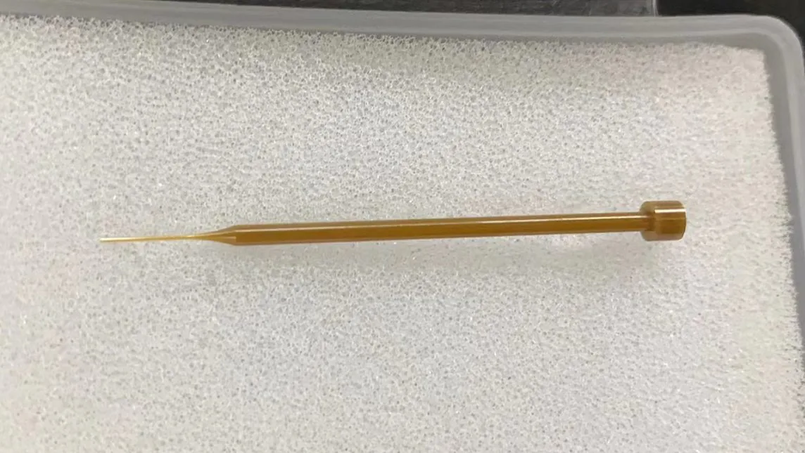

Application Industries
- electronics fixtures
- ceramic locating pins
- insulating tooling parts
- wear-resistant guide components
- precision positioning parts
- custom ceramic inserts
Ceramic Components / Custom Machining
Custom precision ceramic pins, guides, fixtures and insulating parts for electronics, automation and wear-resistant manufacturing applications.

Application Industries
Materials
Tolerances
Equipment
Precision ceramic parts are considered when an application needs a combination of electrical insulation, wear resistance, low contamination or dimensional stability that a metal component cannot provide. Jinyi Precision reviews custom ceramic locating pins, insulating tooling parts, guide components, fixture details and inserts from customer drawings. The material grade and geometry must be assessed together because ceramic families differ in strength, fracture behavior, thermal response and machinability.
Ceramics are hard but generally less tolerant of impact and concentrated stress than ductile metals. A small edge, deep hole or press-fit region that appears simple on a drawing may create grinding, handling or assembly risk. The engineering review therefore focuses on edge support, wall thickness, transitions, contact areas, datum surfaces and the way the component will be installed. No material property or achievable tolerance is assumed until the specified grade and drawing are available.
Electronics manufacturing uses ceramic pins, insulators and locating components where electrical isolation or resistance to repeated contact is important. Inspection and assembly fixtures may use ceramic contact surfaces to reduce metal-to-part contact, while automation equipment can use ceramic guides or positioning details in selected wear environments. Precision tooling applications may specify ceramic inserts where the buyer has already validated the material for the operating condition.
The part function should be described clearly. A locating pin is controlled by diameter, straightness, working-end geometry and assembly method. A plate or insulator may depend more on flatness, hole location and edge condition. A guide component may be governed by the contact surface and mating clearance. This functional information allows the supplier to review the right features instead of treating every ceramic drawing as the same type of job.
The current website lists ZKA-901, NPZ-28 and NPZ-1, together with customer-specified ceramic blanks. These are grade references, not a statement that all ceramics share the same electrical, mechanical or thermal properties. Before quotation, the buyer should provide the full grade designation, manufacturer or datasheet when possible. If a substitution is allowed, the required properties and application must be stated explicitly.
Useful selection information includes insulation requirement, mating material, contact pressure, temperature range, wear mechanism, cleaning condition and expected life. If the customer supplies the blank, identify its finished and unfinished surfaces, existing datum features and any restrictions on grinding. Jinyi should not describe a grade as alumina, zirconia or another standard family without documentation that confirms the composition.
Ceramic tolerance must be confirmed feature by feature. Grade, blank condition, part size, wall thickness, aspect ratio, edge design, grinding access and measurement method all affect feasibility. The website intentionally does not publish one universal ceramic tolerance. A tight diameter on a short supported pin, for example, does not establish the capability for a long slender pin, a deep hole or a thin plate.
Inspection can use optical projection, a tool microscope, height measurement, surface measurement or other suitable instruments depending on the geometry. The drawing should define datums, edge breaks, flatness or position requirements and whether visible chips or cracks have acceptance criteria. Contact measurement force and fixturing should be considered for delicate features. Buyer and supplier should agree how ambiguous edges, chamfers and radii are interpreted before production.
Ceramic parts on this page are associated with precision grinding and inspection equipment rather than wire EDM, because ordinary engineering ceramics are not assumed to be electrically conductive. The route may include blank preparation by the material supplier, reference-surface grinding, diameter or profile grinding, edge finishing, cleaning and inspection. The exact method depends on the specified grade and supplied blank.
Process planning controls how the part is held and how load is introduced during grinding. Unsupported sections, sharp transitions and repeated reclamping can increase risk. The route should minimize datum transfer and preserve sufficient support until critical features are finished. If the geometry requires a process outside Jinyi’s confirmed in-house scope, that boundary should be stated in the quotation rather than implied by a general machine list.
Send a dimensioned PDF and, when available, a STEP or STP model. Include the full ceramic grade, manufacturer or property requirement, quantity, application, mating material, assembly method, critical dimensions, surface requirement, cleanliness need and delivery target. Identify whether the part will be pressed, bonded, clamped or installed with clearance.
Mark areas where chips are unacceptable and state permitted chamfers or radii. If thermal behavior or electrical insulation drives the material choice, provide the operating range and applicable acceptance specification instead of relying on a generic ceramic label. The RFQ form does not upload files; PDF, STEP, STP, DWG or DXF drawings should be sent by email or WhatsApp after submission.
Ceramic quality control combines dimensional measurement with visual review and careful handling. Functional surfaces and locating features are inspected from the agreed datums, while edges can be checked for chips or damage according to the drawing. Cleaning and packaging requirements matter when the part is used in an electronics process or where contamination is controlled.
Jinyi maintains a valid ISO certification, with the formal name, scope and validity defined by the current certificate. A certificate copy, inspection record or material document should be requested during supplier approval or quotation. Packaging can use separated pockets, sleeves or soft dividers as appropriate to the geometry, but the method must be confirmed for the specific part rather than stated as a universal solution.
A ceramic component can pass dimensional inspection and still fail during installation if the assembly concentrates force on a thin wall or sharp edge. The buyer should confirm holder material, fit, adhesive or clamping method and installation clearance. When metal and ceramic parts see temperature change, the assembly design should be reviewed by the customer’s engineer for the selected materials.
For overseas delivery, packaging must prevent part-to-part contact and protect working surfaces. Repeat orders should reference the approved grade, drawing revision, inspection method and packaging agreement. Any material substitution or change in the supplied blank requires a new review. Email records are useful for controlled technical decisions, while WhatsApp can support quick clarification.
Precision Ceramic Pin - Market: Electronics Industry. Requirement: A small ceramic locating component for an electronics fixture, with material and dimensional requirements defined by the customer drawing. Process review: Contact surfaces, edge condition, inspection datum, handling risk and the ceramic grade must be confirmed before precision grinding. Verification focus: Dimensions, edge condition and locating features against the approved drawing.
This scenario describes the review required for a ceramic locating component. Insulation, wear behavior and positioning performance depend on the confirmed material grade, loading conditions and project-specific acceptance records.
FAQ
Jinyi lists ZKA-901, NPZ-28 and NPZ-1, and can review other ceramics according to customer drawings.
Yes. Ceramic parts are often selected for insulation, wear resistance and stable positioning in electronics fixtures.
Please include tolerance, critical surfaces, edge requirements, contact areas and application environment.
Prototype and small-batch ceramic components can be reviewed based on part geometry and material availability.
RFQ Request
Please include material, quantity, tolerance, surface requirement and target delivery date in the form. Please send PDF, STEP, STP, DWG or DXF drawings by Email or WhatsApp after submitting the RFQ form.